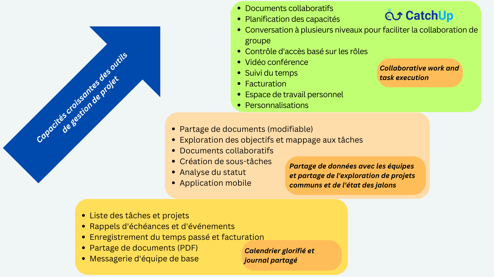

Nous pouvons vous donner de nombreuses raisons, mais vous pouvez choisir la vôtre pour passer à CatchUp !
Parce que nous comprenons les défis de collaborer et de travailler dans des modèles hybrides et distants !
Pour que vous puissiez vous concentrer sur l'essentiel, et que le reste soit pris en charge par CatchUp !
Parce que vous en avez marre d'intégrer une dizaine d'autres outils que notre concurrence veut que vous fassiez !
Parce que vous avez du mal à exploiter tout le potentiel de vos équipes distantes alors que ces esprits créatifs ont du mal à collaborer et à travailler ensemble !
Parce que vous voulez arrêter de payer pour des extras coûteux !
Parce que gérer un projet ne doit pas être un projet en soi !
Parce que vous recherchez une plateforme de gestion de projet et de collaboration puissante mais peu coûteuse et facile à utiliser !
Parce que vous ne cherchez pas seulement un produit, mais un produit avec une cause !
Présentation... d'un environnement nouvelle génération puissant mais abordable pour résoudre vos problèmes organisationnels -
Tout en un seul endroit, à un prix avantageux - accessible depuis tous vos appareils !
CatchUp vous permet d'organiser des tâches, de les assigner à vos équipes et de gérer votre travail en quelques minutes. Il possède toutes les fonctionnalités dont vous avez besoin et bien d'autres sous le capot que vous pourrez découvrir au fur et à mesure que vous vous familiariserez avec lui. Pas pressé, pas de souci !
Alors... Allez, prêt, partez !

Mise en place d'CatchUp
C'est très facile! Créez un ensemble de projets ou reproduisez des modèles pour des aspects différents mais liés de votre travail. Ajoutez des membres d'équipe à ce projet, créez des tâches clés et des éléments d'action, et vous êtes prêt à partir !
Gestion des tâches et des projets
Collaborez avec votre équipe pour terminer les tâches et les éléments d'action à temps et documentez également les résultats en cours de route à l'aide de discussions en temps réel et du partage de fichiers. Des utilitaires efficaces intégrés (tels que Kanban, Calendrier, Listes de chose à faire, Notes, etc.) vous aident à accélérer votre travail et à rester productif. Vous pouvez également partager des fichiers et travailler en collaboration sur des documents.
Optimiser
Vous pouvez facilement ajouter ou modifier ou supprimer des projets, des tâches, des éléments d'action et d'autres produits de travail partagés et optimiser votre flux de travail selon vos besoins. Vous disposez de vues riches, soutenues par des fonctionnalités de recherche riches, pour obtenir le statut en un coup d'œil et identifier les domaines de développement ultérieur !
Sur n'importe quel appareil !
Oui, nous savons comment fonctionnent les équipes. Vous pouvez utiliser CatchUp sur votre bureau pour les tâches les plus lourdes et faire beaucoup sur vos smartphones ou tablettes en déplacement !
Il est très sécurisé et peut être personnalisé selon vos besoins, y compris les déploiements sur site pour les grands clients. Vos données sont sécurisées et sauvegardées !
Arrêtez de payer pour des extras coûteux qui s'additionnent !
Si vous payez pour des outils et des logiciels de visioconférence supplémentaires qui coûtent un bras et une jambe par utilisation, vous avons-nous dit que la visioconférence et les réunions sont incluses dans ce prix forfaitaire ? Apprenez-en plus en nous essayant.
Vous n'avez pas besoin d'"intégrations" avec des dizaines d'autres outils comme nos concurrents le souhaitent !
Toutes nos fonctionnalités sont intégrées dans un environnement unique - réunions, visioconférence, partage de documents, gestion de tâches et de projets, conversation en temps réel. Vous n'avez pas besoin d'assembler Slack, Teams, OneDrive, Dropbox et Zoom juste pour faire avancer quelque chose ! La vie est déjà complexe, le travail n'a pas à l'être !
Peu coûteux à essayer et à utiliser
No, we don't use bait and switch. You can try it free and subscribe for your company at a fixed price each month. No surprises based on per user fee per month. Just a flat fee, for unlimited storage and use for you and your employees.
Nous avons hâte que vous nous essayiez et que vous prospériez ! Faites-nous savoir comment nous pouvons l'améliorer pour vous. Nous ne sommes pas encore parfaits, mais vous pouvez l'être !
Alors qu'est-ce que tu attends?
S'inscrire et exploitez la puissance de CatchUp pour atteindre vos objectifs.
Pourquoi baleine ?
Parce qu'il y a un noyau très puissant qui s'exécute sous cette plate-forme majestueuse mais ludique qui fait glisser vos projets jusqu'à leur achèvement, avec élégance.
Et oui! C'est un produit avec une cause !
Pour tout le bon travail accompli, une partie de nos revenus est reversée pour sauver les baleines !